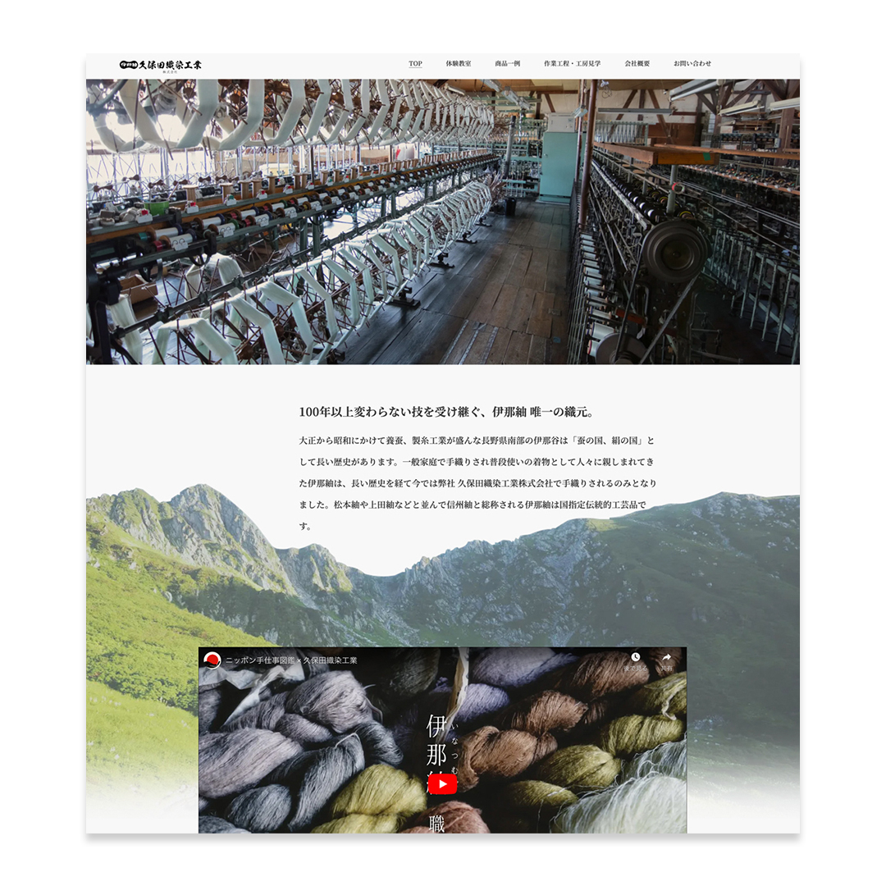

WORKS
実績
イラストエッセイ制作・展示 | ペルー祭り
長野県伊那市のゲストハウスで行われたイベント「ペルー祭り」で展示したイラストエッセイです。
キャンバス地にプリントすることで、味のある展示になりました。ペルーに旅行した時の思い出を、イラストとエッセイ、撮影した写真で綴っています。日本ではあまり知られていない地方都市でしたので、見る人がどんな土地なのか興味を持ってもらえるように、旅行中の小ネタをふんだんに入れて描きました。
イラスト・デザイン・アートディレクションを担当しました。
- 制作
- 2022
- 撮影
- Kei
- 監修
- nandi peru
- 会場・主催
- 赤石商店
Webサイト•販促物制作 | 久保田織染工業株式会社様
国指定伝統工芸品である伊那紬を製造販売する、老舗織物会社のWebサイトを制作しました。2020年7月に初公開してから現在まで、サイトの保守管理、SNS運用、内容やデザインの修正を継続的に行ない、より良い内容になるよう日々努めています。クライアントが希望するワードは、公開半年後から現在までGoogle検索で1位をキープし続けています。定期的にお問い合わせが来るようになり、サイトを見て訪問するお客様が増えた、とクライアントからは嬉しいお知らせを度々いただいています。
ヒアリング、取材、撮影ディレクション、画像編集、サイトデザイン、コーディング、アクセス解、保守管理、SNS運用を現在も担当しています。
- 制作
- 2020〜随時更新
- 撮影
- Kei

スマホでの閲覧が約半数のため、タブレットでの閲覧時にも見やすいようにリキッドレイアウトを用いています。

小物にパッケージを付けて売りたいとご相談頂き、台紙と販促ポップを作成。地域で活動が盛んな雷鳥の保護活動をサポートする目的で作られた商品でしたので、クライアントと相談の上それを前面に押し出した販促ポップにしました。発売から1年、定期的に売れ続けており、ポップを見て買ったとの声を時々いただいています。
デザイン・アートディレクション・モデルを担当しました。
- 制作
- 2021
- 台紙イラスト
- Hana
- 撮影
- Kei
成人式フォトスポット制作 | 西箕輪公民館様

長野県伊那市の西箕輪公民館で開催された成人式『伊那市 二十歳のつどい』で使用されたフォトスポットを制作しました。テーマは「自然からの祝福」。豊かな自然と水芭蕉、農場のいちご…と西箕輪という地域から連想されるものを絵に表し、それに幸運の象徴となるような白い鳥を飛ばして、成人してこの地から飛び立つ若者を祝福するイメージです。
イラスト・デザイン・アートディレクションを担当しました。
設置当日は立ち会いができなかったため、納品時に取り扱い説明書を作成してお渡ししました。設置方法や、素材を劣化させないための保管方法が記載されています。
- 制作
- 2022
メインビジュアル｜どうかん山こどもクリニック様
2020年6月、東京で新規開業した小児科「どうかん山こどもクリニック」様のメインビジュアル等を制作しました。繊細な描き込まれたタッチでとのご要望でしたので、ペンにデジタル彩色で描いています。アナログ感がありながらウェブサイト上でも使用できるように考慮した、クライアントと二人三脚で作り上げた思い出深い作品です。ホームページ、看板、電柱広告、封筒、ハンコとさまざまな媒体に合わせてイラストをご用意させていただきました。
イラスト・デザイン・アートディレクションを担当しました。
- 制作
- 2020
制作アシスタント｜赤ペン添削でわかりやすい!選ばれるデザイナーへの道

書籍の制作に奥越ながら少しだけ関わらせていただきました。イラストを1点、印刷物とバナーの作例を数点担当しました。制作チームのメンバーは現役で活躍されている先輩デザイナーばかり。そんな先輩を全力で追いかけ、デザイン面、精神面で助けていただきながら取り組みました。
作例用イラスト1点・デザインアシスタントを担当しました。
- 制作
- 2022
飲食店マップ等
パートの勤め先で制作した広告物の一部です。基本は上司がテキスト等内容をまとめ、私は与えられた情報を元に見た目をデザインする流れになっています。ごくたまに提案の機会に恵まれたときには、その時出来うる限りの意見や資料を揃えて取り組むようにしています。上層部とお客様両方の立場になって取り組むために上流から関わりたいと日々考えているため、認めていただけるようデザインスキルの向上に励んでいます。
自社サイトのデザインや、toB、toC向けチラシ・バナーの制作、間取りや地図の制作、管理物件の塗装イメージの制作、写真のレタッチなどをマーケティング課のパートタイムデザイナーとして担当しています。

飲食店マップ
指定エリアにある飲食店を調査し、イラスト調の地図にまとめました。アイコンイラストは作成し、人物イラストは商用フリーのイラストを使用しています。
クチコミカード
来店されたお客様にお配りするカードを制作しました。可愛く親しみやすく、という指示でしたので、イメージキャラクターに合うようにポップで明るく仕上げました。

オープンチラシ
新規オープンする物件のチラシを制作しました。上司からの情報を元に、料金等わかりやすくまとめました。

抽選会チラシ
ご契約者様限定の抽選会の店内掲示ポスターを制作しました。社内のルールとして、誰でも修正できるようにテキストをアウトライン化して加工することがほぼ無いのですが、データを工夫して修正しやすくしてあります。この方法が受け入れられたので、その後も楽しい雰囲気のデザインを指示された際には同じようにテキストで遊ぶようになりました。

Youtube CM
ABOUTページの「デザイナーとしての業務経験」で書いたように、提案から関われた数少ない案件です。アメコミイラストは手描き感があるほうがいいと先輩からアドバイスいただき、ラフさを残した作りになっています。社内の誰でも編集できるように、Premier ProではなくPower Pointのアニメーションとスライドを利用してパーツの動く紙芝居形式の動画に仕上げました。
ロゴデザイン｜茶房ちこのや様

手間暇かけて作られた手料理が美味しいごはん屋さん「茶房ちこのや」様のロゴを制作しました。ロゴマークのモデルは穏やかなお人柄が愛されるオーナーご夫婦です。
イラスト・デザイン・アートディレクションを担当しました。
- 制作
- 2021
提案時の資料の一部です。毎回このように提案をまとめて説明していました。制作過程はnoteの記事にまとめてあります。
イメージキャラクター｜伊那谷りんご農園KANCA様

伊那谷りんご農園KANCA様のイメージキャラクターを制作しました。段ボール箱用、ステッカー用と用途に合わせてイラストを2点制作しました。KANCA様に娘さんがいらっしゃったら･･･というコンセプトを元に、愛犬2匹とともに農園をお手伝いする女の子を描いています。
イラスト・デザイン・アートディレクションを担当しました。

提案時の資料の一部です。毎回このように提案をまとめて説明していました。
- 制作
- 2021